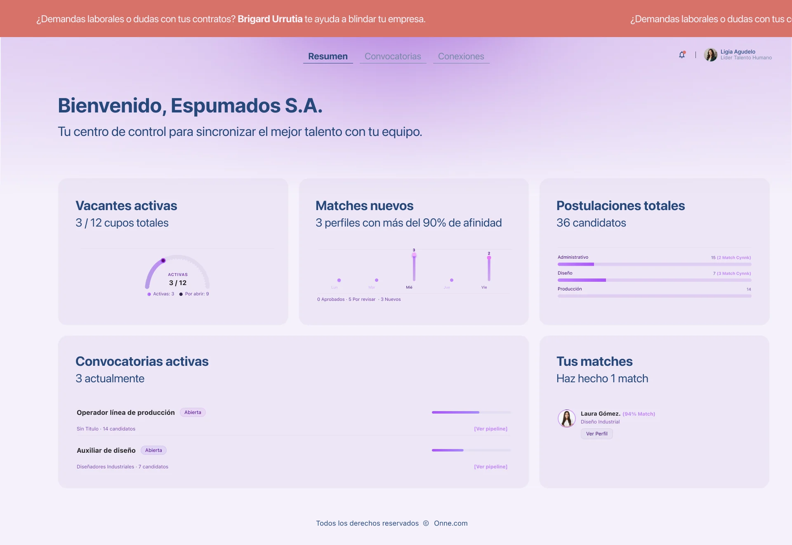
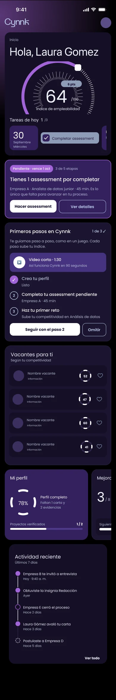
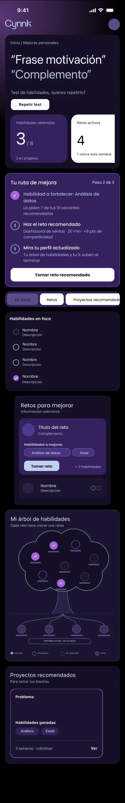
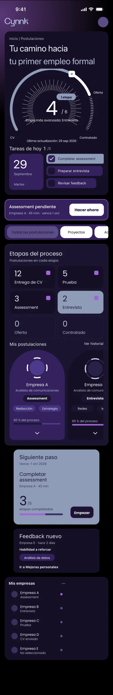
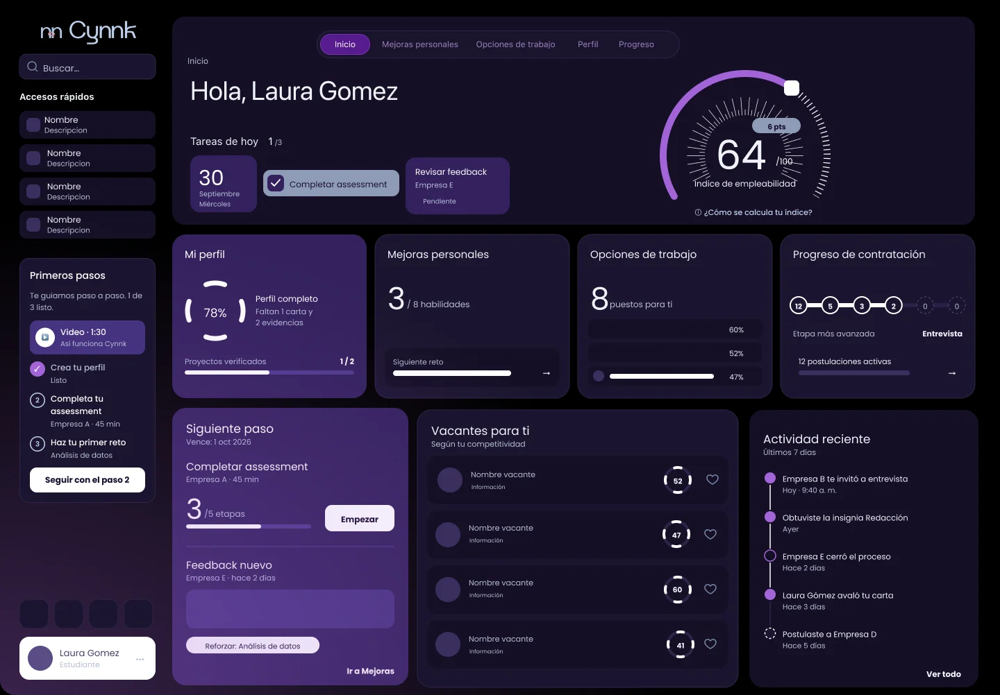

Cynnk conecta empresas con talento joven
Cuatro flujos: la web de empresas, la app de estudiantes y la web de estudiantes en modo claro y oscuro. Elige uno para recorrerlo tal como está en Figma. Toca cualquier parte vacía de la pantalla para ver qué zonas son clicables.

Empresa · Web
Portal de empresas
Espumados S.A. publica vacantes, revisa postulados por compatibilidad y cierra procesos con feedback.
Entrar al portal


Estudiante · App
App de estudiantes
Laura sube su índice de empleabilidad, toma retos, presenta assessments y define sus no negociables.
Abrir la app
Estudiante · Web
Web de estudiantes
La experiencia de Laura en computador: índice de empleabilidad, retos, vacantes, postulaciones y no negociables.
Abrir la web
Estudiante · Web
Web de estudiantes · oscuro
El mismo recorrido en modo oscuro. Desde Mi perfil puedes cambiar entre claro y oscuro.
Abrir la web oscura